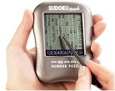
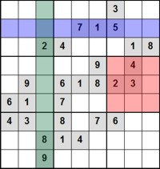

 HHBK Tendo Research Center

Das Sudoku Feld besteht aus einem Gitter mit 3 x 3 Boxen, die jeweils in
3 x 3 Zellen unterteilt sind, insgesamt also 81 Zellen in 9 Zeilen und 9
Spalten. In einige dieser Zellen sind schon zu Beginn Zahlen zwischen 1
und 9 eingetragen. Je nach dem gewähltem Schwierigkeitsgrad sind 50
(leicht), 30 (mittel) oder 25 (schwer) von 81 möglichen Feldern
vorgegeben.
Es geht darum, die Zellen so zu füllen, dass zum Schluss das Sudoku
komplett ausgefüllt ist und sich in jeder Zeile (blau), Spalte (grün)
und Block (rot) nur jeweils einmal die Zahlen von 1-9 befinden.